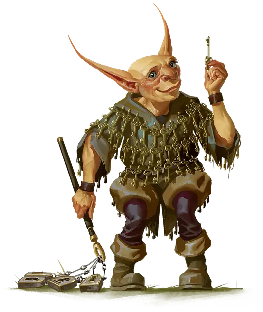

Побрякушка Джангл
Jingle Jangle
Маленький Гуманоид (Гоблиноид), хаотично-добрый, именной НИП

Класс Доспеха 15 (кожаный доспех, щит)
Хиты 7 (2к6)
Скорость 30 футов
| мод | спас | ||
|---|---|---|---|
| СИЛ | 8 | −1 | −1 |
| ЛОВ | 14 | +2 | +2 |
| ТЕЛ | 10 | +0 | +0 |
| мод | спас | ||
|---|---|---|---|
| ИНТ | 10 | +0 | +0 |
| МДР | 8 | −1 | −1 |
| ХАР | 8 | −1 | −1 |
Навыки Скрытность +6
Чувства тёмное зрение 60 футов, пассивное Восприятие 9
Языки Общий, Гоблинский
Опасность 1/4 (50 опыта)
Бонус мастерства +2
Особенности
Ловкий побег. Гоблин может в каждом своем ходу бонусным действием совершать действие Засада или Отход.
Действия
Набор ключей. Рукопашная атака оружием: +5 к попаданию, досягаемость 5 футов, одна цель. Попадание: 7 (3к4) дробящего урона.
Описание
Одержимость Побрякушки Джангл ключами служит предостережением для тех, кто хочет заключить сделку с Бавлорна Гнилой соломой. Однажды гоблинша обратился за помощью к ведьме в отчаянной попытке отменить то, что она считала ужасным проклятием: куда бы Побрякушка Джангл ни пошла, она испытывала мучительный страх оказаться не с той стороны запертой двери. Когда она обратилась за помощью к Бавлорне, ведьма лишила гоблинши способности воспринимать этот страх и заменила его ненасытной и непреодолимой потребностью собирать ключи. Эта навязчивая идея настолько велика, что Побрякушка Джангл потеряла чувство собственного достоинства и теперь говорит о себе только в третьем лице.
Побрякушка Джангл - добрая душа, которая говорит о себе в третьем лице. Она умеет находить ключи и с удовольствием пополняет свою коллекцию новыми. Она также дарит ключи в качестве подарков тем, кто в них нуждается.
Побрякушка Джангл ищет спокойной жизни вдали от запертых дверей и интриг фейского двора. Она переехала в Телемский холм, чтобы наслаждаться его обществом и защитой.